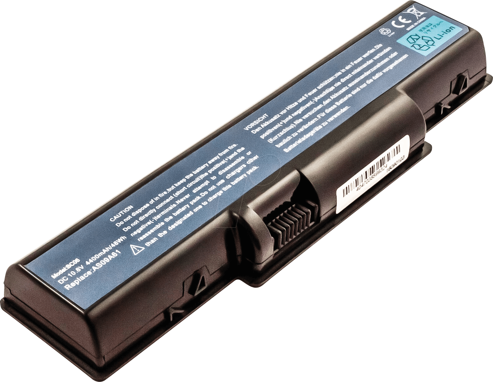
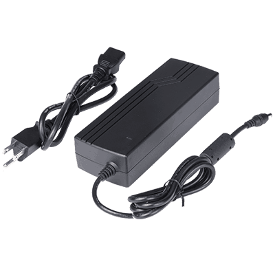
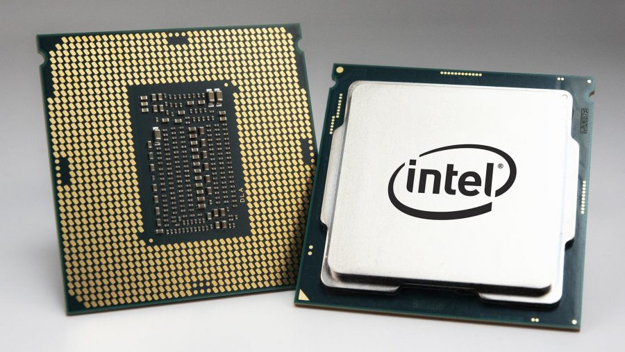
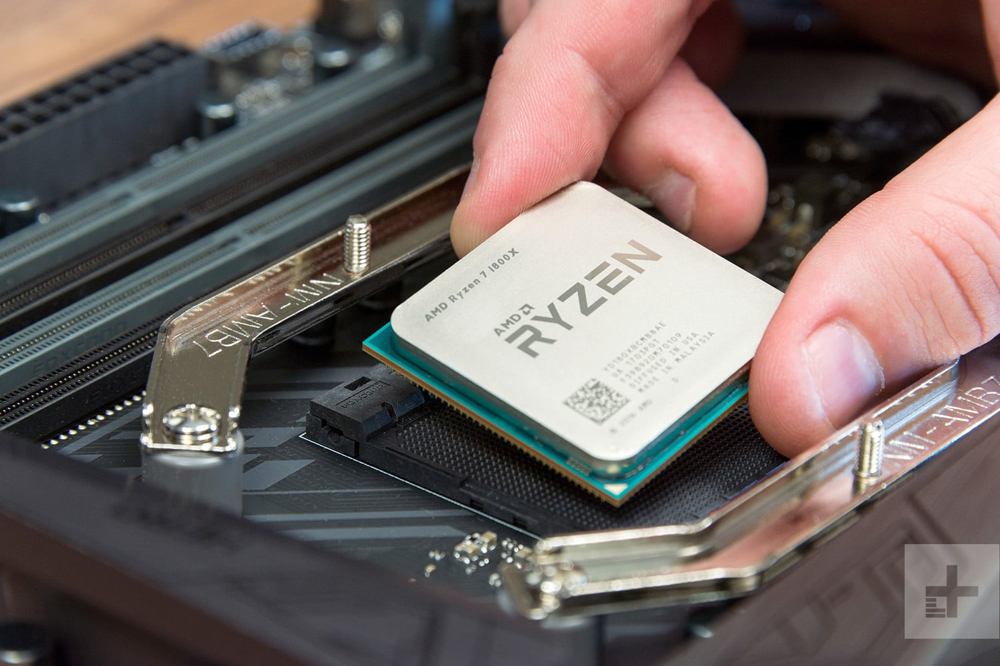
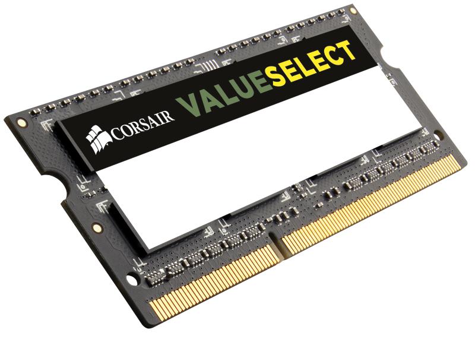
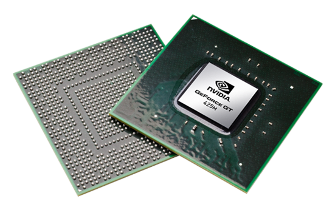
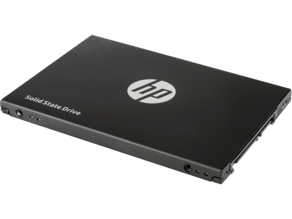

Computer Components
Battery |
A laptop battery is a hardware component which is rechargeable and provides power to the laptop when an electric power connection is not available. It may provide power to the laptop for number of hours. Laptops usually use lithium-ion (LI-ION), lithium-polymer (Li-polymer), NICAD and NIMH batteries. Each laptop may come with a one or more battery capacity. E.g. Macbook air comes with built in 49.9 watt-hour lithium-polymer battery whereas HP elite book pro 850 G5 comes with 3-cell 50 watt-hour. The higher the capacity of the battery, the longer it lasts - however its weight also increases. Most of the laptop manufacturers do not disclose the battery manufacturers as this is an integrated part of a laptop. Apple, HP, Dell and all other laptops provide the battery with their own brand names. The cost of a laptop battery varies from model to model but can be very expensive, as it is a minimum of $100 and can go up to $150. |
|||
Power Supply |
A laptop's power supply, also known as the AC adapter or charger, connects a laptop to the AC power supply and converts AC voltage into a DC voltage, as required by laptops. Power supply is an external part to a laptop system and has a power cord connected with the AC power. Each laptop model manufacture has a different power supply for different models. Most of the power supplies accept 100 to 240V AC power and convert it to the required DC voltage. Ex; A Macbook Air uses 30W USB-C Power Adapter; USB-C power port whereas HP Elitebook 850 G5 Notebook PC uses 3 pin grounded/USB Type C adapter of 45 W or 65 W charger. Most of the laptop manufacturers do not disclose the power supply manufacturers as this is an integrated part of a laptop. Apple, HP, Dell and all other laptops provide the power supply with their own brand names. |
|||
CPU  |
The Central Processing Unit, also known as the CPU, is one of the most important parts of a computer, as it performs calculations, actions and runs programs. It takes instructions from the computer's RAM, decodes and processes the action, before the output is delivered. A CPU is a small, square chip placed onto the device's motherboard. It can be found in any type of device such as computers, laptops, smartphones, tablets and even smart TVs. A CPU, once composed of only one core, is now composed of multiple cores, allowing it to accomplish multiple tasks faster and at once. A single chip could consist of a dual-core, quad-core, eight and sometimes even 12. Another frequently mentioned attribute of a CPU is the speed, also known as the frequency or the clock speed. The speed is demonstrated through the usage of GHz. It demonstrates how many instructions a CPU can handle per second. The CPU also consists of an onboard memory called the L2/L3 cache. The more you have of it, the faster your CPU will perform. Some of the CPU's main manufacturers include:
The overall cost of a basic CPU, which lets you perform basic productivity tasks such as browsing the web, word processing and light spreadsheet work, is a range from $50 to $100. A CPU for gaming ranges from $150 to $250, and a CPU for creative media work ranges from $250 to $350. |
|||
RAM |
The Random Access Memory (RAM), also known as the system memory is a computer part which temporarily carries software and files currently in use. These software and files are loaded onto the RAM from the computer's storage drives (hard drive/solid state drive), where the information is stored long-term. It is then removed once the application is closed or the operating system is shut down. Compared to the computer's storage drives, the RAM allows for a quicker access to software and files. The amount of RAM determines how much memory the operating system and application can use. The computer having sufficient memory, allows for several programs to run efficiently. The amount of RAM is determined through the unit gigabytes (GB). In everyday laptops, there is usually 8GB of RAM. Lower end models have around 2 to 4GB and higher end mainstream laptop models have 12 to 16GB of RAM. High performance, gaming laptops have 24 to 32GB. Another component relating to the RAM of a computer is the number of slots a computer has. Usually nowadays, a basic computer comes with 2 RAM slots, and a gaming computer with 4 RAM slots. Lastly, the speed of the memory also has an effect on the performance of the computer. A RAM's speed is expressed in Megahertz (MHz). Modern laptops support 1600 to 2133 MHz of memory speeds and high-end performance laptops support up to 2400 MHz. In a computer a RAM is installed as memory modules, which are SO-DIMMs. There are different types of SO-DIMM memory, which include DDR4, DDR3 and DDR3L. A RAM's cost depends on the size of the RAM and ranges from $10 (1GB stick) to $60 (8GB stick). |
|||
Graphics Card |
A graphics card processes the images and display them on the monitor. To do this, the graphics card converts data into a signal that the computer is able to understand. There are 2 types of cards:
Different manufacturers use different graphics cards from Intel, AMD or Nvidia. Ex; Apple Macbook Pro uses Intel UHD Graphics 617 whereas HP Elitebook 850 G5 Notebook PC uses Intel HD Graphics 620 and Intel UHD Graphics 620. |
|||
SSD drive |
A Solid State Disk drive, also known as SSD is based on flash memory. Flash memory uses memory chips that feed power and transfer data. These chips consist of semiconductors that flip arrays to different states of electric charge so that they are able to store code. The earlier hard disk was based on movement and magnetism. It used to have a spinning magnetic platter to read and write data. Since the Solid State Disk drive has no moving parts, accept for the semiconductors, the data read and write speed is very fast and takes less power. The SSD drive is smaller and lighter, which makes it possible to create today's modern thin laptops, tablets and smartphones. This drive is also more reliable and has a longer lifespan than the earlier Hard Drive as it has no moving parts to damage or wear out quickly. Different manufactures use different memory storage. The storage is measured in bytes. |
|||
Operating System SoftwareAn operating system (OS) is a software that manages the computer's hardware and software resources. It executes applications and controls the peripherals. It allows the user to communicate with the computer without knowing how to speak the computer's language. The most common examples of operating system software are:
MacOS, Microsoft Windows and Chromium. All Apple devices run on Mac OS whereas most other laptop manufacturers such as Dell and Hp use Windows 10. All Chromebooks run on the Google operating system, Chromium. |
||||
.png)